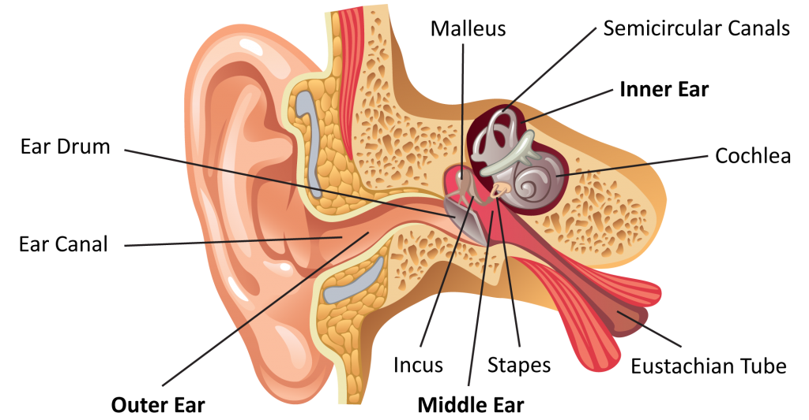

Section 8.8: The Human Ear
The human ear is a highly sensitive organ that allows us to detect and interpret sound waves. It converts mechanical vibrations of air particles into electrical signals that the brain perceives as sound. Understanding the ear’s structure helps explain how we perceive pitch, loudness, and direction of sound.
Structure of the Ear
The ear has three main parts:
- Outer Ear: Includes the pinna (ear flap) and ear canal. Collects sound waves and directs them toward the eardrum.
- Middle Ear: Contains three tiny bones (ossicles): malleus, incus, and stapes. These amplify vibrations from the eardrum and transmit them to the inner ear.
- Inner Ear: Contains the cochlea, a spiral-shaped structure filled with fluid. Hair cells in the cochlea convert mechanical vibrations into electrical impulses sent to the brain via the auditory nerve.
How Sound Travels Through the Ear
- Sound waves enter the ear canal and strike the eardrum, causing it to vibrate.
- The ossicles amplify the vibrations and transmit them to the oval window of the cochlea.
- Vibrations create waves in the cochlear fluid, stimulating specific hair cells sensitive to different frequencies.
- Hair cells generate nerve impulses, which travel to the brain through the auditory nerve.
- The brain interprets these impulses as pitch, loudness, and direction of sound.

Figure 8.8.1: Anatomy of the human ear showing outer, middle, and inner ear.
Key Notes
- The outer ear collects sound; the middle ear amplifies it; the inner ear converts it to electrical signals.
- The cochlea acts as a frequency analyzer: high frequencies stimulate hair cells near the base, while low frequencies stimulate cells near the apex.
- Damage to hair cells can cause permanent hearing loss, since they do not regenerate.
- The ear also helps maintain balance through the semicircular canals (vestibular system).
Review Questions
- What is the main function of the outer ear?
- List the three ossicles in the middle ear and describe their role.
- How does the cochlea distinguish between high-frequency and low-frequency sounds?
- Explain how the ear converts sound vibrations into electrical impulses.
- Why does damage to hair cells cause permanent hearing loss?
- What additional role does the inner ear play apart from hearing?